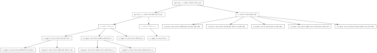

plugins.nexa¶

API¶
- class plugins.nexa.Nexa(kernel)¶
Bases: models.Protocol
Main class of the Nexa protocol plugin.
- process_message(message)¶
Processes a radio message received by the radio modem into a message understable by the protocol. The implementation of the message processing is , for the moment, a hard-coded finite-state machine.
TODO: translate into english Reçoit une trame identifiee comme destinee à ce driver et transmise par la couche inferieure. Cela suppose que la couche la plus basse a la capacite d’identifier le protocole du message et s’adresse ainsi directement à la methode decode_sequence du driver. La methode doit être specialisee pour traiter et decoder une trame Nexa Elle sera totalement redigee quand on saura sous quelle forme le message est obtenu
- send_command(device, command)¶
Method called when a device intends to send a message. It builds up the Nexa message according to the command to be sent and the identity of the sending device.
- class plugins.nexa.NexaDevice(protocol, settings)¶
Bases: models.Device
This is the class used to implement any Nexa-controlled device.
- switch_on(args)¶
(Internal) Method called when the “on” action is triggered. On the one side, it sends the radio command accordingly. On the other side, it updates the Information which reflects the state of the device.
- switch_off(args)¶
(Internal) Method called when the “off” action is triggered. On the one side, it sends the radio command accordingly. On the other side, it updates the Information which reflects the state of the device.
- sync(args)¶
(Internal) Method called when the “sync” action is triggered. It sends a series of “on” commands.
- unsync(args)¶
(Internal) Method called when the “unsync” action is triggered. It sends a series of “off” commands.
- plugins.nexa.random() → x in the interval [0, 1).¶